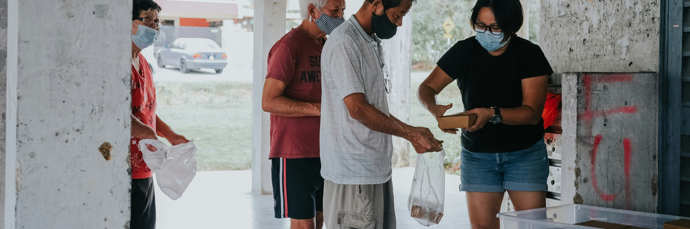
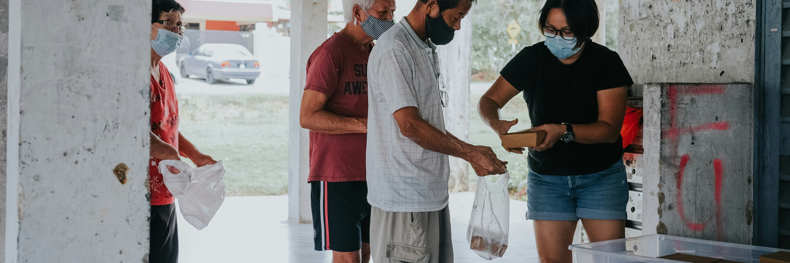
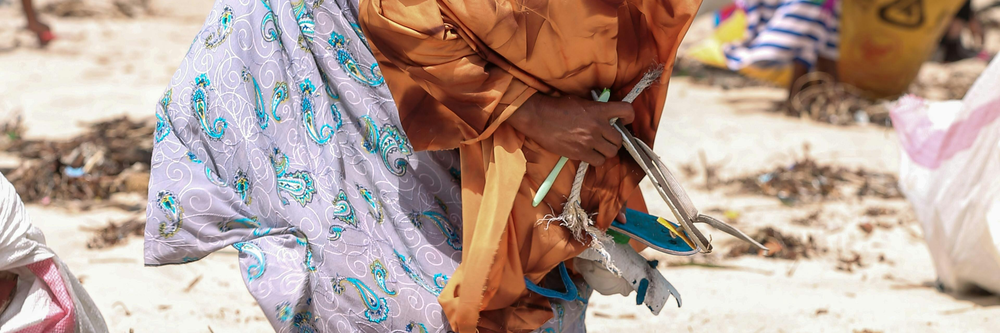
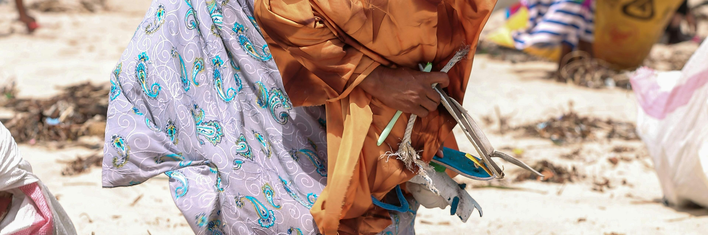

REPORT
Name: Alishbah Mazhar
Introduction
Charity. is a non-government organization dedicated to creating a brighter future for the underprivileged and safeguarding our environment.
The site provides the interested users a minimalistic design to navigate through our journey of helping people and environment. They can go through our story of helping by undergoing our programs and our mission, and help grow this journey by donating as our website says “Every Donation Matters”.
Inspiration
The site was mainly inspired by multiple local organistion websites listed below :
and a enthusiast Zafar Abbas, founder of JDC Welfare Organisation who has done a great work for charity
Accessiblity
To keep the website accessible multiple factors were taken care of :
- Perceivability, use of basic colour palette so users have no problem going through the content, pictures and text having optimal size so there is no issue understanding. Alt attribute used for every image so if in any case images don't load up properly the screen reader can know an image exists but it can ignore it
- Operable, all pages on the site a well connected to each other so users can have a smooth navigating experience throughout.
- Understandable, Use of focus indicators to help users know on which page they currently are or which option they have currently selected. Users can easily go through the webiste without any hustle as words used are basic.
Usability
To keep the website Usability multiple factors were taken care of :
- Responsiveness, The desktop version of the site is optimized for both tablets and desktop screens. Every page is dynamic, and the basic layout of each page adjusts to the size of the user’s screen. When shifted to smaller devices navigation bar and other content change to adapt.
- Credibility, The Website provides its users with credible information such as our work and motive and where there donation are going to build a trust. It also provides the bank details of the organisation
- User Friendly Design, Use of clear menus, well-labeled buttons, and a straightforward path to the most important sections, like donation pages, program details, and contact information.
Learning
Some processes that required learning were :
- CSS colour attributes do not apply on Icons from the internet for which I used a website Filter Generator which generate a filter attribute according to the given colour code.
- When creating the payment method on Donate Page I wanted to show the details each payment according to user selection for which i had go through multiple articles and JavaScript documentation to learn how to change the class of an element during runtime.
- During styling of website I also had to go through CSS discussions which helped me learn alot of new attributes that can be used such as Transitions to have smooth animations across buttons, [class*='substring'] to design multiple classes by using a substring of their name such as name = 'col-1', 'col-2' substring = 'col-' and :checked to change something on your website if checkbox is checked.
Evaluation I
Providing a website that is User-Friendly, Responsive and Looks good were the things that I feel were successful about this website. Considering points mentioned, this project as whole was a success for me as it helped me learn alot about HTML, CSS and JS, going through multiple forums, articles and documentation also helped me learn reusability of code available online while fitting it in with your code .
Evaluation II
There were few things that could have improved if I had a better access to the target audience of this website so the design could have been keeping them in mind, also few sections of website also required an actual interaction with organisation the website is getting built for to know about how they work so that can be implemented on the website. If I again get a chance to make website in future, I may do this slightly differently as I now know more about these frameworks and would have more experience making websites.


 



 
